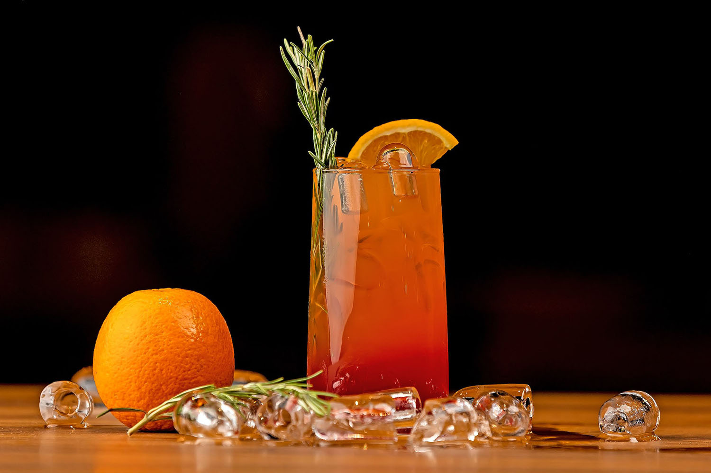

Rārangi Kai / Menu
The Haukai Restaurant offers a unique culinary experience - a journey into the history of Maori kai (food).
Through this experience reconnect with and replenish your mind, body, soul and spirit. Immerse yourself in Maori culture; honoring the memory and wisdom of our ancestors and welcoming the spiritual guidance from our Atua (Gods).
Kai / Food
| APPETIZERS | |
|---|---|
| REWENA BREAD | 10 |
| Traditional Māori bread. | |
| PAUA FRITTER | 16 |
| Finely diced pieces of paua, served with a side salad and horopito dressing. | |
| RAW FISH | 20 |
| Dried snapper fish marinated in coconut cream, served with tomatoes and spring onions. | |
| POACHED SALMON | 22 |
| Salmon poached in an orange and pistachio glaze, served with rewena bread. | |
| SEAFOOD BASKET | 25 |
| Crumbed mussels, salt and pepper squid, crumbed hoki bites and garlic prawns. |
| MAINS | |
|---|---|
| FISH OF THE DAY | 25 |
| Beer battered fish and kumara fries, served with a side salad and homemade tartare. | |
| MUSSELS & SCALLOPS | 25 |
| Steamed mussel & scallop mousse, honey and soy broth. | |
| SEAFOOD CHOWDER | 30 |
| Creamy chowder filled with terakihi, prawn, hoki, scallops and mussels, served with flatbread. | |
| PORK BELLY | 30 |
| Slow cooked pork belly served on a bed of apple slaw with roasted kumara, and crispy noodle. | |
| LAMB STEAK | 33 |
| New Zealand Lamb coated in a kawakawa crumb, served with Dijon mustard glazed carrots, roasted butternut squash and a mushroom Jus. | |
| VENISON | 33 |
| Venison crusted with horopito, served with glazed plums, cabbage salad and red wine Jus. |
| DESSERT | |
|---|---|
| KĀPITI ICE CREAM | 10 |
| Check for daily specials. | |
| STEAM PUDDING | 12 |
| Golden syrup flavoured steam pudding, served with vanilla ice cream. | |
| MINI PAVLOVA | 16 |
| Mini Pavlova served with kawakawa and lemon infused cream and fresh fruit. | |
| BANOFFEE PIE | 16 |
| Toffee, fresh bananas and fresh cream. |
Inu / Drinks
| RED WINE | B/G |
|---|---|
| Terrace Edge Pinot Noir, 2012, Wairarapa | 53 / 13 |
| Altitude Pinot Noir, 2010, Marlborough | 64 / 15 |
| Greystone Pinot Noir, 2012, Wairarapa | 73 / 17 |
| Terrace Edge, Syrah, 2012 Wairarapa | 53 / 13 |
| Altitude Syrah, 2010 Marlborough | 64 / 15 |
| Greystone Syrah, 2012, Wairarapa | 73 / 17 |
| Pegasus Bay Merlot, 2013, Waipara | 65 / 14 |
| Pegasus Bay Pinot Noir, 2013, Waipara | 110 / NA |
| WHITE WINE | B/G |
|---|---|
| Terrace Edge Pinot Noir, 2012, Wairarapa | 53 / 13 |
| Spade Oak Pinot Gris, 2011, Gisborne | 40 / 10 |
| Maude Pinot Gris, 2017, Otago | 49.50 / 11 |
| Charles Wiffen Chardonnay, 2013, Otago | 48 / 11 |
| Amisfield, Riesling, 2016, Otago | 53 / 12 |
| Lamont Riesling, 2010, Otago | 57 / 13 |
| Elephant Hill Viognier, 2013, Hawkes Bay | 55 / 12 |
| Folium Sauvignon Blanc, 2011, Marlborough | 52 / 11 |
| Billecart-Salmon Brut Reserve, France | 120 / NA |
| BEER AND CIDER | |
|---|---|
| Garage Project Range | 11 |
| Tuatara Range | 11 |
| Panhead Range | 10 |
| Coopers Ale | 10 |
| Heineken | 11 |
| Moa Cider | 10 |
| Crooked Cider | 10 |

| NON-ALCOHOLIC | |
|---|---|
| Mineral Water | 4 |
| Soft Drinks | 4 |
| Juice | 4 |
| Coffee | 4.5 |
| Tea | 3.5 |